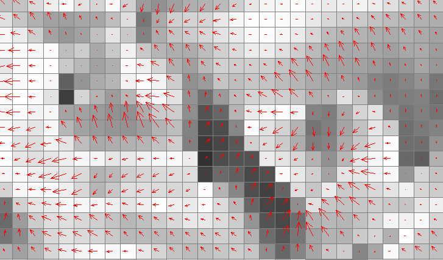
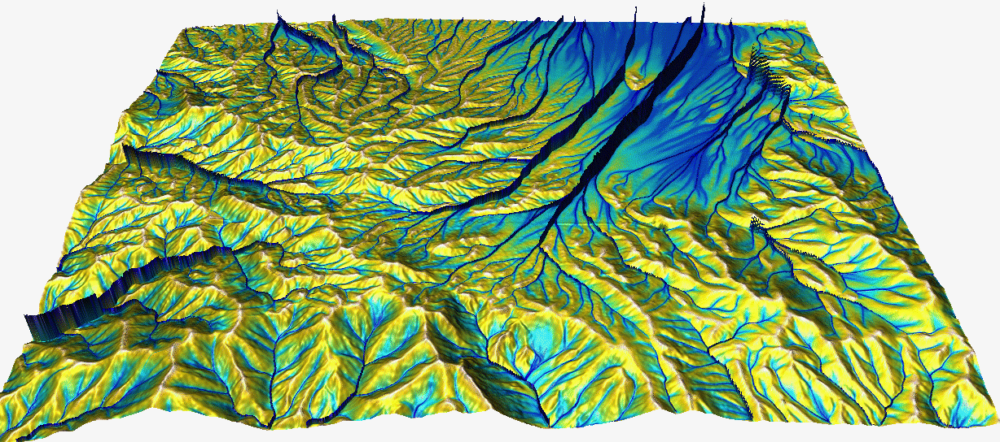

Flow routing and watershed analysis
Helena Mitasova
Learning objectives
- define cumulative terrain parameters based on flow routing
- understand methods for computing flow direction and flow accumulation
- identify methods for flow routing through depressions and flat areas
- perform stream extraction from a DEM
- perform watershed delineation
Cumulative flow parameters
Flow routing over a DEM is used to derive the following parameters and features:
- flow path length
- flow accumulation
- stream networks
- contributing areas
- watershed boundaries
Computing flow direction
What is flow direction:
- direction of surface gradient vector $\nabla z = (f_x, f_y)$
- steepest slope direction
- aspect (orientation of hillslope)
Methods to derive flow direction from a DEM:
- discrete: D8, D16
- continuous: D-infinity
Discrete flow direction
D8 algorithm
- aspect discretized to 8 directions: 0, 45, 90, ... degrees
- estimated from elevation differences between the given grid cell and its 8 neighboring cells
- flow direction is in the direction of maximum elevation difference $\Delta z_{max}$ in 3x3 window
Continuous flow direction
D-infinity algorithm: gradient direction is derived from a continuous function (polynomial or spline)
$$\alpha^\circ = {\arccos} \left( -f_y / \sqrt{f_x^2+f_y^2} \right) = \arctan (f_y / f_x) $$

recalss that $f_x = {\partial z \over \partial x}$ and $f_y = {\partial z \over \partial y}$
Flow routing
Tracing flow in the gradient direction to compute
- flowline: path of a single drop following gradient vector
- flow path length: flowline length measured over surface or in horizontal plane
- flow accumulation: density of flowlines generated from each grid cell
Flow lines
- Lines along the steepest slope
- Perpendicular to contours
- Dinf: linear interpolation of aspect along the grid cell edges leads to smooth flowlines


Note: D8 flowlines are traced along grid lines and diagonals
Flow path length
- length of a hillslope upslope from a given cell
- distance of given cell from the outlet

upslope flow tracing: hillslope length downslope flow tracing: distance from an outlet
The longest path to outlet
- length of the flow line from the grid cell that is the farthest from the outlet
- when water from this cell reaches outlet, all cells within a watershed have drained to outlet
- the longest path to outlet is used to compute time to concentration (time to steady state flow)
Flow accumulation at a grid cell
- assuming a single flow line (drop) generated from each cell,
it is the number of flowlines (drops) passing through the given grid cell
- number of grid cells draining into the given grid cell
- upslope contributing area for the given grid cell (horizontal area, in cell units)

Flow accumulation across landscape
Evolution of steady state flow as water moves through the landscape
with steady rainfall and uniform flow velocity

flow line density captured after each 10 flow routing steps
Flow accumulation at steady state
Measure of steady state flow depth when all flowlines reached the outlet or the edge of the map

Flow accumulation represented as exagerrated 3D surface added to the elevation model highlights
the steady state flow accumulation
Flow routing methods
- Single Flow Direction (SFD) moves entire unit of flow into a single downslope cell
(does not capture flow dispersal on hillslopes with convex tangential curvature)
- Multiple flow direction (MFD) partitions flow into two or more downslope directions
- both can be implemented with D8 or Dinf flow direction
Flow routing methods
Flow accumulation as a result of SFD routing
using D8 and D-inf flow direction


Flow routing methods
Flow accumulation as a result of SFD and MFD routing with D8 flow direction


Weighted flow routing
Each cell is assigned weight proportional to the amount of runoff it produces
(rainfall excess available for runoff after infiltration and vegetation intercept)


Land use map with developed areas (orange) and associated runoff weights - in blue areas
all water gets routed, in grey areas only a fraction
Weighted flow routing
Spatially variable runoff reflects the impact of developed areas on flow accumulation


Stream extraction
- Automated stream mapping: extracting connected stream network from flow accumulation map
- Stream raster map is derived using map algebra based on flow accumulation threshold
- Result is converted to vector representation of a connected stream network
- Stream origin is dynamic, often driven by groundwater:
additional information is needed for accurate identification
Stream extraction
Flow accumulation from 30m NED using SFD D8 method, threshold accumulation: 100 cells,
and a vectorized extracted stream network

Flow routing in flat areas
- to create connected stream network flow needs to be routed through flats and depressions
- integer DEMs, lakes or filled depressions create flat areas
- flat areas: zero slope and undefined aspect
- solutions:
- iterative assignment of direction from the first draining cell
- imposed gradient (small change in elevation)
Flow routing through depressions
Depressions "trap" flow
Sources of depressions in DEMs:
- real topographic features
- noise, measurements errors
- processing artifacts
Handling depressions
Filling

Handling depressions
Filling, carving

Handling depressions
Filling, carving, hybrid
Handling depressions
Filling, carving, hybrid, least cost path

Depressions filling: lidar DEM
Depressions in lidar-based DEM and MFD flow accumulation using DEM with filled depressions

Many depressions are artificial lakes where bridges or roads create dams
Depressions filling: radar DSM
Radar (SRTM, IFSARE) DSM include vegetation surface leading to complex, nested depressions


Filling alters elevation in large areas
Depressions: carving
Carving streams from digitized stream data may introduce artifacts, if the digitized streams
do not match the DEM

Hydrologically enforced DEM
Modified DEM with connected stream network where each grid cell drains into the outlet
- hydrologically enforced DEM does not have depressions or flat areas
- it should not be referred to as hydrologically correct, because all wetlands are removed
- least cost path methods do not require depression filling
Stream mapping accuracy
Measured as horizontal accuracy of stream centerline
- topographic maps (blue linesa): often the lowest accuracy, low order streams are missing
- National Hydrographic Data - updated, structured representation of stream and river networks
- extracted from lidar-based DEMs - better, but accuracy low in coastal plane, improved new lidar mapping
- digitized from high resolution orthophotos and on ground surveys - most accurate except forested areas
- structures require additional information (bridges are represented as dams in DEMs)
Stream mapping accuracy
USGS NHD stream, stream extracted from 1ft resolution DEM, on ground GPS points

Watersheds
- watershed - important land management unit
- water and mass from a watershed drains to a single point: outlet
- other terms for watershed: (drainage) basin, catchment, contributing area
- watersheds can be organized into hierarchies based on the size of contributing area
see more at
USGS Hydrologic units: hierarchy of drainage areas for national river network,
the newest delineation is The Watershed Boundary Dataset (WBD)
Watershed analysis
- find watershed boundaries for a given outlet, for example, a stream gauge
- find contributing area for a given stream segment
- partition a region into watersheds with the given approximate size
Watershed analysis
Watershed boundaries for a given outlet using SFD-D8 method

Outlet must be located exactly on the extracted stream grid cell - local flowaccumulation maximum
Watershed analysis
Partition of a region into watersheds

Southern Wake county
Watersheds
Watershed and its subwatershes

Chagres river watershed in Panama
Wetness index
measure of topographic potential for zones of saturation
$$w = \ln (A / \tan \gamma)$$
- $A$ is upslope contributing area per unit contour width,
- $\gamma$ is slope
- $w$ increases with larger $A$ (more water) and lower slope (slower water flow).
Estimating wetness index in GIS:
- $A$ - flow accumulation MFD, optionally weighted to account for soil and cover variability
- $\gamma$ - steepest slope (3x3 neighborhood polynomial or spline)
- Compute the expression using map algebra or a dedicated module/tool
Potential for inundation flooding
- elevation threshold - bathtub model
- spread of water from source - friction gradient rather than elevation gradient
- hydrologically connected surface water level
- HAND: height above the nearest drainage technique
Flooding - bathtub model

Flooding - lake model
- Creates hydrologically connected area (lake) from a given point at a given elevation
- Valid for small flat areas with point source, approximates steady state, uniform flooding


water level at 90m asl
Flooding - lake model
- Simplified storm surge - series of lake models
- Neglects time and water mass: worst case scenario

Flooding - inundation model
- Over larger areas river channel has variable elevation: Height Above Nearest Drainage (HAND) methodology
- Using flow direction, computes raster where each cell is $\Delta z$ between the given cell
and the the cell on the stream into which the cell drains.
- predicted water level (stage) is then spread from the stream


Summary
- we have defined cumulative terrain parameters based on flow routing: flow length, flow accumulation
- we have learned about methods for computing flow direction (D8, Dinf) and flow routing SFD, MFD
- we discussed flow through flat areas and depressions
- we have applied flow routing to extract streams and watersheds and to compute wetness index